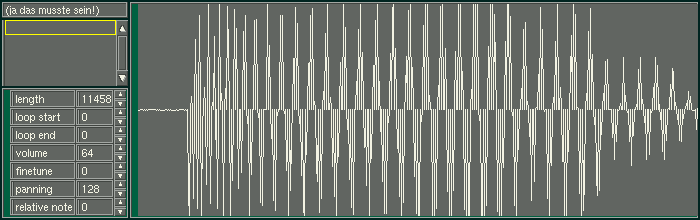

Samplers
I'm not really into this part of music but I know there are some things
around , Check out Ceres
Soundstudio, Multitrack
, and off course
the Linux
Applications and Utilities Page
Off Course there is the Sampler in Maube Tracker

[Prev]
[Next]